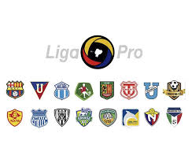

El Campeonato Ecuatoriano de Fútbol 2024 llamado oficialmente «LigaPro Ecuabet 2024» por motivos de patrocinio,1 es la sexagésima sexta edición de la Serie A del fútbol profesional ecuatoriano y la sexta bajo la denominación de LigaPro. El torneo es organizado por la Liga Profesional de Fútbol del Ecuador, empezó en marzo y finalizará en diciembre.23
En esta temporada se produce el regreso del Club Deportivo Macará de Ambato a la máxima categoría tras una temporada de ausencia.4 El Imbabura Sporting Club de la provincia de Imbabura retorna a la máxima división del fútbol ecuatoriano tras 13 años,5 siendo la última vez en el Campeonato Nacional 2011
